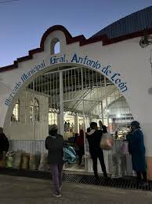
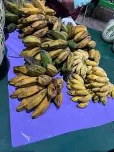
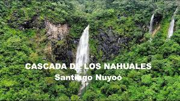
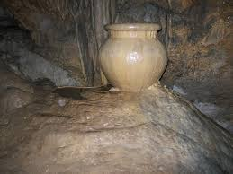

|
|
| principal Historia Curiosidades Contacto Ubicacion Galeria |  Santiago Nuyoo cuenta con un mercado municipal,cada domingo las personas de todas las rancherias con las que cuenta el municipio, bajan para vender sus producto (quelites, frutas, carne y de más), cabe resaltar que el mercado es una fuente de ingresos para muchos de los habitantes del municipio. En Santiago Nuyoo se llevo acabo la eleboración de la harina de platano, teniendo como objetivo usarla para elaborar pasteles, tortillas galletas y de más, los principaales platanos que se ocuparón fueron el de bolsa y el esperon.
 La leyenda de la cascada de los Nahuales en Santiago Nuyoo, Tlaxiaco, Oaxaca, se relaciona con la creencia en los nahuales, animales protectores y compañeros espirituales de las personas. Se dice que el primer animal que se acerca a un recién nacido se convierte en su nahual, otorgándole cualidades y la capacidad de transformarse en él. La cascada misma se considera un lugar sagrado y de gran importancia en las prácticas rituales relacionadas con los nahuales. es una olla de piedra que se encuentra bajo gotas de agua durante todo el año, está en una cueva bajo 15 metros del suelo que los pobladores han denominado, “casa de la lluvia”. Es una olla de piedra que con las gotas de agua que caen de las rocas se va llenando y se mantiene así durante todas temporadas del año, lugar poco conocido pero llena de historias y leyendas que cuentan los habientes. |